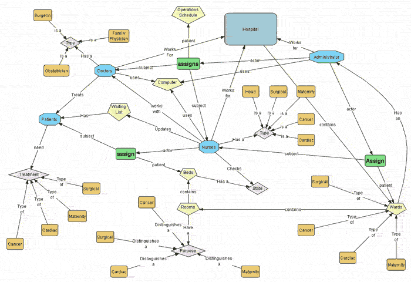
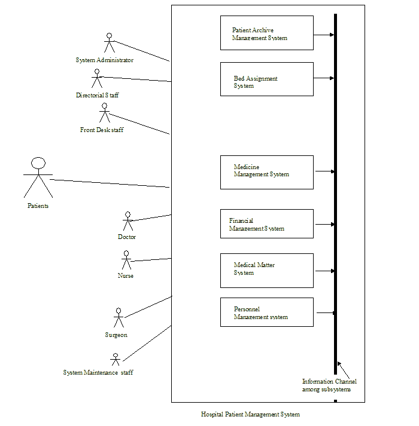

|
Version |
Author(s) |
Description of Version |
Date Completed |
|
Draft |
Shao Jingqiu, Chad |
Initial draft created for early distribution and review |
16-Oct-2002 |
|
Revision1 |
Cyprian, Li, Jingqiu |
Revision of draft and adding of necessary omissions |
22-October 2002 |
|
Revision 2 |
Cyprian, Li, Jingqiu, Flip, Chad |
Final revision |
23- October-2001 |
This document is a Software Requirements Specification (SRS) for the Hospital Patient Management System (HPMS). It describes the functions, goals and tasks that the system can perform. Software Team Development Inc. (STD) will use this document to describe the scope of the project and to plan for the system’s design and eventual implementation. This document forms the basis for the contract between the hospital and Software Team Development Inc. (STD).
The document lists the following features as the high-level requirements that the Hospital Patient Management System will satisfy:
The document also presents a number of requirements that can be classified into two categories: functional and non-functional requirements. Non-functional requirements can be used to improve the functioning of the computer system, but not the management of the hospital as a whole. For these requirements, Software Team Development recommends that the Hospital management identify a set of experts from their computer department and their legal department to formally accept the requirements. The primary areas of concern are performance, security and user-interface. Functional requirements, on the other hand, are requirements directly related to the hospital management. Software Team Development Inc. (STD) also recommends that the hospital management identify a set of experts in the different domains to examine and formally accept these requirements.
We would be grateful if you accept this document as the beginning of the process for approving the requirements and launching the design phase of the project. If you have any questions about this document please contact Chad La Fournie at (403) 210 7545 between 9 a. m. and 4 p.m. on weekdays. Your prompt response will be highly appreciated.
1. Introduction
1.1 Purpose
The purpose of this document is to describe all the requirements for the Hospital Patient Management System (HPMS). The intended audience includes all stakeholders in the potential system. These include, but are not necessarily limited to, the following: administrative staff, doctors, nurses, surgeons and developers.
Developers should consult this document and its revisions as the only source of requirements for the project. They should not consider any requirements statements, written or verbal as valid until they appear in this document or its revision.
The hospital management and its team members should use this document and its revisions as the primary means to communicate confirmed requirements to the development team. The development team expects many face-to-face conversations that will undoubtedly be about requirements and ideas for requirements. Please note that only the requirements that appear in this document or a future revision, however, will be used to define the scope of the system.
1.2 Scope
The proposed software product is the Hospital Patient Management System (HPMS). The system will be used to allocate beds to patients on a priority basis, and to assign doctors to patients in designated wards as need arises. Doctors will also use the system to keep track of the patients assigned to them. Nurses who are in direct contact with the patients will use the system to keep track of available beds, the patients in the different wards, and the types of medication required for each patient. The current system in use is a paper-based system. It is too slow and cannot provide updated lists of patients within a reasonable timeframe. Doctors must make rounds to pick up patients’ treatment cards in order to know whether they have cases to treat or not. The intentions of the system are to reduce over-time pay and increase the number of patients that can be treated accurately. Requirements statements in this document are both functional and non-functional.
1.3 Definitions, Acronyms, and Abbreviations
HPMS Hospital Patient Management System
PHN Personal Health Number on health card
Report an account of patients
Database collection of information in a structured form
Front-desk staff administrative staff that work at reception desk
Logon ID a user identification number to enter the system
Password a word that enables one to gain admission into the system
Web-based application an application that runs on the Internet
Windows 2000 an operating system produced by Microsoft Corporation that is Used to operate the computer using a graphical user interface.
MySQL a query language to interrogate the system
ID Patient Identification number
GUI Graphical User Interface
SRS Software Requirements Speficification
1.4 References
No formal documents have been referenced in this document.
1.5 Overview
This Software Requirements Specification (SRS) is the requirements work product that formally specifies Hospital Patient Management System (HPMS). It includes the results of both business analysis and systems analysis efforts. Various techniques were used to elicit the requirements and we have identified your needs, analyzed and refined them. The objective of this document therefore is to formally describe the system’s high level requirements including functional requirements, non-functional requirements and business rules and constraints. The detail structure of this document is organized as follows:
Section 2 of this document provides an overview of the business domain that the proposed Hospital Patient Management System (HPMS) will support. These include a general description of the product, user characteristics, general constraints, and any assumptions for this system. This model demonstrates the development team's understanding of the business domain and serves to maximize the team's ability to build a system that truly does support the business.
Section 3 presents the detail requirements, which comprise the domain model. Picture 1 shows an overview of the Hospital Patient Management System and the relationships between requirements.
2. General Description
2.1 Product Perspective
This Hospital Patient Management System is a self-contained system that manages activities of the hospital as bed assignment, operations scheduling, personnel management and administrative issues. Various stakeholders are involved in the hospital system. A general picture of the system and the relationship between various stakeholders in the hospital is shown in Picture 2.
2.2 Product Functions
The system functions can be described as follows:
Registration: When a patient is admitted, the front-desk staff checks to see if the patient is already registered with the hospital. If he is, his/her Personal Health Number (PHN) is entered into the computer. Otherwise a new Personal Health Number is given to this patient. The patient’s information such as date of birth, address and telephone number is also entered into computer system.
Consultation: The patient goes to consultation-desk to explain his/her condition so that the consulting nurse can determine what kind of ward and bed should be assigned to him/her. There are two possible circumstances:
a) If there is a bed then the patient will be sent to the bed to wait for the doctor to come.
b) If there is no bed, the patient is put on a waiting list until a bed becomes available.
Patient check out. If a patient checks out, the administrative staff shall delete his PHN from the system and the just evacuated bed is included in available-beds list.
Report Generation: The system generates reports on the following information: patients, bed availability and staff schedules after every six hours. It prints out all the information on who has used which bed, when and the doctor that is taking care of a given patient as well as expected medical expenses.
2.3 User Characteristics
The system will be used in the hospital. The administrators, doctors, nurses and front-desk staff will be the main users. Given the condition that not all the users are computer-literate. Some users may have to be trained on using the system. The system is also designed to be user-friendly. It uses a Graphical User Interface (GUI).
Front-desk staff:
They all have general reception and secretarial duties. Every staff has some basic computer training. They are responsible for patient’s check-in or notification of appropriate people (e.g. notify administrator or nurse when an event occurs).
Administrators:
They all have post-secondary education relating to general business administration practices. Every administrator has basic computer training. They are responsible for all of the scheduling and updating day/night employee shifts. Administrators in the wards are responsible for assigning doctors and nurses to patients.
Nurses:
All nurses have post-secondary education in nursing. Some nurses are computer literate. Consulting nurses to whom patients give short descriptions of their conditions are also responsible for assigning patients to appropriate wards if the beds are available, otherwise putting patients on the waiting list. Nurses in wards will use the HPMS to check their patient list.
Doctors:
All doctors have a medical degree. Some have further specialized training and are computer literate. Doctors will use the HPMS to check their patient’s list.
2.4 General Constraints
· The system must be delivered by January 1st 2003.
· The existing Telecommunication infrastructure is based on IEEE100802.3 standards and the system must conform to this standard using category 5 cables for networking
· The system must be user-friendly
2.5 Assumptions and Dependencies
· It is assumed that one hundred IBM compatible computers will be available before the system is installed and tested.
· It is assumed that the Hospital will have enough trained staff to take care of the system
3. Specific Requirements
3.1 Functional Requirements
SRS001
Add patients
The HPMS shall allow front-desk staff to add new patients to the
system.
SRS002 Assign ID
The HPMS shall allow front-desk staff to give each patient a ID
and
add it to the patient’s record. This ID shall be
used
by the patient throughout his/her stay in hospital.
SRS003
Assign Ward
The consulting nurse shall use HPMS to assign the patient to an
appropriate
ward.
SRS004 Assign to
Waiting List
The consulting nurse shall use HPMS to assign Patient to a
waiting
list if no bed is available.
SRS005
Assign Doctor
The administrative staff in the ward shall use HPMS to assign a
doctor
to a given patient.
SRS006
Assign Nurse
The administration staff in the ward shall use HPMS to assign a nurse
to a given patient.
SRS007
Inform Doctors
The HPMS shall inform doctors of new patients.
SRS008
Inform Nurses
The HPMS shall inform nurses of new patients.
SRS009
Emergency Case
In an emergency case, the administrative staff shall use HPMS to
assign
an emergency room, doctors and nurses to the patient immediately.
SRS010
Surgery case
In a surgery case, the administrative staff shall use HPMS to assign a
surgery room, surgeon and nurses to the patient.
SRS011
Generate Report
(normal)
The HPMS shall generate the patient’s situation record every two
hours
for normal patients.
SRS012
Generate
Report(Severe)
The HPMS shall generate patient’s situation record every half hour
for
severe patients.
SRS013
Record procedure
The whole treatment procedure for the patient
shall
be recorded by the system.
SRS014
Inform patient
The HPMS shall automatically inform the patients who are on the bed
waiting
list of available beds whenever they become available.
Check Out
SRS015
Delete Patient ID
The administrative staff in the ward shall be
allowed
to delete the ID of the patient from the system when the patient
checks
out.
SRS016
Add to beds-available list
The administrative staff in the ward shall be
allowed
to put the beds just evacuated in beds-available list.
Report Generation
SRS017
Patient
information
Every six hours the HPMS shall generate reports on patients
about
the following information: patient’s PHN,
patient’s
name, ward name, bed number and the doctor’s name.
SRS018
Bed Aavailability
Every six hours the HPMS shall generate reports on bed availability
about
the following information: ward name, bed number, occupied/unoccupied
SRS019
Staff Schedule
Every six hours the HPMS shall generate reports on staff schedule
about
the following information: staff ID, staff name, staff type, duty shift.
SRS020
Patient
Mandatory Information
Each patient shall have the following mandatory information: first
name,
last name, phone number, personal health number, address, postal
code,
city, country, patient identification number.
SRS021
Update Patient Information
The HPMS shall allow the user to update any of the patient’s information
as described in SRS020
SRS022
Search
for Patient
The HPMS shall allow the user to search for patient’s information by
last
name or PHN or patient ID.
SRS023
Staff Mandatory Information
Each staff in hospital shall have the following mandatory
information:
identification number, first name, last name, phone number, address,
postal
code, city, country, employee type, duty schedule.
SRS024
Update Staff Information
The HPMS shall allow the user to update any of the staff’s
information
as described in SRS023.
SRS025
Employee Information
The HPMS shall allow the user to search for employee information by
last
name, or ID number.
SRS026
Ward Types
The ward is categorized into four types:
Maternity,
Surgical, Cancer and Cardiac.
SRS027
Ward
Information
Each ward in HPMS shall include the following mandatory information:
ward
name, ward number, list of rooms in ward.
SRS028
Room Information
Each room in HPMS shall include the following mandatory information:
room
number, list of beds in room, full/not full.
SRS029
Bed Information
Each bed in HPMS shall include the following information: bed number,
occupied/unoccupied, patient PHN.
SRS030
Ward Search
The HPMS shall allow users to search the ward, room, and bed directly
by ward number, room number and bed number respectively, or by
hierarchal
hyperlinks from ward to bed.
3.2 Design Constraints
SRS031
Database
The system shall use the MySQL Database, which is open source
and
free.
SRS032
Operating System
The Development environment shall be Windows 2000.
SRS033
Web-Based
The system shall be a Web-based application.
3.3 Non-Functional Requirements
3.3.1 Security
SRS034
Patient Identification
The system requires the patient to identify
himself
/herself using PHN
SRS035
Logon ID
Any user who uses the system shall have a Logon ID and
Password.
SRS036
Modification
Any modification (insert, delete, update)
for
the Database shall be synchronized and done only by the administrator
in the ward.
SRS037
Compliance
The system must comply with the Regional Health Authority Regulations
concerning privacy, section 703.2RHA/2000/v78
SRS038
Front Desk staff Rights
Front Desk staff shall be able to view all information in HPMS, add
new
patients to HPMS but shall not be able to modify any information in it.
SRS039
Administrators' Rights
Administrators
shall be able to view and modify all
information in HPMS
SRS040
Nurses'
Rights
Nurses shall only be able to view all
information
in HPMS.
SRS041
Doctors Rights
Doctors shall only be able to view all
information
in HPMS
3.3.2 Performance Requirements
SRS042
Response Time
The system
shall give responses in 1 second after
checking the patient’s information.
SRS043
Capacity
The System
must support 1000 people at a time.
SRS044
User-interface
The
user-interface screen shall respond within
5 seconds.
SRS045
Conformity
The systems must
conform to the Microsoft Accessibility
guidelines
3.3.3 Maintainability
SRS046
Back Up
The system
shall provide the capability to back-up
the Data
SRS047
Errors
The system
shall keep a log of all the errors.
3.3.4 Reliability
SRS048
Availability
The system
shall be available all the time.

Picture 1: Relationships between entities in the hospital Patient Management System
Picture 2 Overview of Hospital Patient Management System